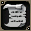

技能・魔法的基礎知識請看這裡
延遲0的魔法/技能，使用混合藥水時可以連射。
未裝備武器時，攻擊技能的延遲 -1。
提供情報或編輯請求，請到情報提供公佈欄、編輯公佈欄。
技能
| 名稱 | 習得條件 | 消耗 | 延遲 | 取得途徑 |
| 攻擊 | Lv0 | ? | 建立角色時已習得NPC:米魯里斯神官NPC:盧亞斯神官NPC:斯歐米神官NPC:魔界村神官NPC:魯克西翁神官NPC:依卡魯斯藥店 | |
| 效果 | 基本攻擊力:－ | |||
| 守護者檢查 | Lv1 | ? | NPC:米魯里斯神官NPC:盧亞斯神官NPC:斯歐米神官NPC:魔界村神官NPC:魯克西翁神官 |
診斷守護動物的疾病
 解除裝備 解除裝備 | Lv1 | ? | NPC:米魯里斯神官NPC:盧亞斯神官NPC:斯歐米神官NPC:魔界村神官NPC:魯克西翁神官NPC:依卡魯斯藥店 |
效果:解除武器和盾牌
| 飛吻 | Lv1 | ? | 海灘夏日獎勵品 |
想向那個人傳達心意…發射愛心
| 丟雪球 | Lv1 | ? | Q:用雪仗，製作 1 個雪人 |
僅限雪仗中使用 效果依手套而異。[消耗雪球]手套 HP/100 的傷害
| 城堡標記 | Lv1 | - | 所屬戰鬥公會成為城主的瞬間，角色在攻城戰場地時取得 |
顯示城主公會的標記
| 顯示懷特拉布 | Lv1 | - | 過去活動 |
在 3 月 14 日(前後?)使用，角色頭上會顯示愛心特效。※需開啟魔法特效效果:勝利者標記(MaxHP/MP/SP 增加 2%) 持續時間:將近 4 分鐘?
| 顯示情人節愛心 | Lv1 | - | 過去活動 |
在 2 月 14 日(前後?)使用，角色頭上會顯示愛心特效。※需開啟魔法特效
| 戰鬥標記 | Lv1 | - |
證明戰鬥排名第 1 名的標示
 猜拳 猜拳 | Lv1 | ? | 米拉克巴克斯 |
顯示「石頭」「剪刀」「布」其中之一
| 骰子 | Lv1 | ? | 米拉克巴克斯 |
擲骰子，顯示 1～6 的點數
| 釣魚 | Lv1 | - | NPC:克魯特(魯克西翁)NPC:猴子商人(海MAP:無法之海域) |
進行釣魚所必需 ※關於釣魚請看這裡
| 位置確認 | Lv5 | ? | NPC:米魯里斯神官NPC:盧亞斯神官NPC:斯歐米神官NPC:魔界村神官NPC:魯克西翁神官NPC:依卡魯斯藥店 |
告知目前自己所在位置的地名
| 寵物騎乘 | Lv50 | ? | 斯歐米：守護動物店 |
可騎乘搭乘型守護動物(下來時也使用)※騎士 Lv50 習得，但實際上 Lv51 才能騎乘
氣球
| 名稱 | 習得條件 | 消耗 | 延遲 | 取得途徑 |
| 善氣球1 | 善惡決定 | ? | NPC:宇宙森林雜貨店 | |
| 善氣球2 | 善惡決定 | ? | 默斯基普(藍):斯坎達倫1默斯基普(綠):斯坎達倫2 | |
| 善氣球3 | 善惡決定 | ? | 斯凱米格(綠):斯坎達倫1 | |
| 善氣球4 | 善惡決定 | ? | [默斯基普]:斯坎達倫1 | |
| 善氣球5 | 善惡決定 | ? | 默斯基普(紅):斯坎達倫3 | |
| 善氣球6 | 善惡決定 | ? | 斯凱米格(藍):斯坎達倫3 | |
| 善氣球7 | 善惡決定 | ? | [斯凱米格]:斯坎達倫3 | |
| 善氣球8 | 善惡決定 | ? | 赤紅斯凱米格:斯坎達倫6 | |
| 善氣球9 | 善惡決定 | ? | 阿米倫(藍):斯坎達倫6 | |
| 善氣球10 | 善惡決定 | ? | [阿米倫]:斯坎達倫6 | |
| 惡氣球1 | 善惡決定 | ? | NPC:宇宙森林雜貨店 | |
| 惡氣球2 | 善惡決定 | ? | 夏摩可(黃):帕爾塞斯1 | |
| 惡氣球3 | 善惡決定 | ? | 斯泰娜(綠):帕爾塞斯1 | |
| 惡氣球4 | 善惡決定 | ? | [夏摩可]:帕爾塞斯2 | |
| 惡氣球5 | 善惡決定 | ? | 夏摩可(紅):帕爾塞斯3 | |
| 惡氣球6 | 善惡決定 | ? | 斯泰娜(黃):帕爾塞斯3 | |
| 惡氣球7 | 善惡決定 | ? | [斯泰娜]:帕爾塞斯3 | |
| 惡氣球8 | 善惡決定 | ? | 赤紅斯泰娜:帕爾塞斯6 | |
| 惡氣球9 | 善惡決定 | ? | 安提拉加農炮（藍）:帕爾塞斯6 | |
| 惡氣球10 | 善惡決定 | ? | [安提拉加農炮]:帕爾塞斯6 |
魔法
| 名稱 | 習得條件 | 消耗 | 延遲 | 取得途徑 |
| 歸還 | Lv0 | ? | 建立角色時已習得NPC:米魯里斯神官NPC:盧亞斯神官NPC:斯歐米神官NPC:魔界村神官NPC:魯克西翁神官 | |
| 效果 | 死亡時，傳送到出生的國家(自己職業的基本城鎮) | |||
 回歸點 回歸點 | Lv0 | ? | NPC:米魯里斯神官NPC:盧亞斯神官NPC:斯歐米神官NPC:魔界村神官NPC:魯克西翁神官NPC:依卡魯斯藥店 |
死亡時，移動到指定的回歸點(事先登記的地點)
| 懷特拉布 | Lv5(男) | ? | 未使用魔法 |
可以發射愛心。
| 白色愛情標記 | Lv(男) | ? | '07 情人節活動 |
可以發射愛心。
 情人節愛心 情人節愛心 | Lv5(女) | ? | 未使用魔法 |
可以發射愛心。
| 情人節愛心標記 | Lv(女) | ? | '07 情人節活動 |
可以發射愛心。
| 愛愛光束 | Lv | ? |
可以發射愛心。
 愛你愛妳 | Lv51 | ? | 婚禮 |
瞬間移動到結婚對象所在位置(需在同一伺服器內，且雙方都戴著結婚戒子)
特殊
關於氣力系統
| 名稱 | 習得條件 | 消耗 | 延遲 | 取得途徑 |
| 精神動作1 | Lv10 | 氣力計量表 | ? | Q:取得等級 1 氣力魔法 |
| 效果 | 效果:移動速度+5%、DAM+20、DEX+5、暴擊發生率+4% | |||
| 精神動作2 | Lv51 | 氣力計量表 | ? | Q:取得等級 2 氣力魔法 |
| 效果 | 效果:移動速度+10%、DAM+20、DEX+7、暴擊發生率+8% | |||
| 精神動作3 | Lv91 | 氣力計量表 | ? | Q:取得等級 3 氣力魔法 |
| 效果 | 效果:移動速度+15%、DAM+25、DEX+9、暴擊發生率+12% | |||
| 精神動作4 | Lv99 | 氣力計量表 | ? | Q:取得等級 4 氣力魔法 |
| 效果 | 效果:移動速度+20%、DAM+25、DEX+11、暴擊發生率+14% | |||
| 精神意象1 | Lv10 | 氣力計量表 | ? | Q:取得等級 1 氣力魔法 |
| 效果 | 效果:移動速度+5%、MDAM+20、INT+3、WIS+3、魔法持續時間+10% | |||
| 精神意象2 | Lv51 | 氣力計量表 | ? | Q:取得等級 2 氣力魔法 |
| 效果 | 效果:移動速度+10%、MDAM+20、INT+4、WIS+4、魔法持續時間+10% | |||
| 精神意象3 | Lv91 | 氣力計量表 | ? | Q:取得等級 3 氣力魔法 |
| 效果 | 效果:移動速度+15%、MDAM+25、INT+5、WIS+5、魔法持續時間+20% | |||
| 精神意象4 | Lv99 | 氣力計量表 | ? | Q:取得等級 4 氣力魔法 |
| 效果 | 效果:移動速度+20%、MDAM+25、INT+6、WIS+6、魔法持續時間+20% | |||
| 善變身 | 善惡決定 | 氣力計量表 | ? | NPC:宇宙森林雜貨店 |
| 效果 | 效果(1次):最大HP+500、最大MP+300、最大SP+300、最大BP+100[對對手造成的物理/魔法傷害減少5%、暴擊發生率增加7%、移動速度增加5%] | |||
效果(2次):最大HP+600、最大MP+350、最大SP+350、最大BP+150[對對手造成的物理/魔法傷害減少6%、暴擊發生率增加12%、移動速度增加8%]
效果(3次):最大HP+700、最大MP+400、最大SP+400、最大BP+200[對對手造成的物理/魔法傷害減少7%(傷害變為約1.8倍)]移動速度(記述寫到「為」就結束了。效果不明)
效果(4次):最大HP+?、最大MP+?、最大SP+?、最大BP+?[對對手造成的物理/魔法傷害減少?%、暴擊發生率增加?%、移動速度增加?%]
善變身圖片請看這裡
| 惡變身 | 善惡決定 | 氣力計量表 | ? | NPC:宇宙森林雜貨店 |
| 效果 | 效果(1次):最大HP+500、最大MP+300、最大SP+300、最大BP+100[對對手造成的物理/魔法傷害減少5%、暴擊發生率增加7%、移動速度增加5%] | |||
效果(2次):最大HP+600、最大MP+350、最大SP+350、最大BP+150[對對手造成的物理/魔法傷害減少6%、暴擊發生率增加12%、移動速度增加8%]
效果(3次):最大HP+700、最大MP+400、最大SP+400、最大BP+200[對對手造成的物理/魔法傷害減少7%(傷害變為約1.8倍)]移動速度(記述寫到「為」就結束了。效果不明)
效果(4次):最大HP+?、最大MP+?、最大SP+?、最大BP+?[對對手造成的物理/魔法傷害減少?%、暴擊發生率增加?%、移動速度增加?%]
惡變身圖片請看這裡